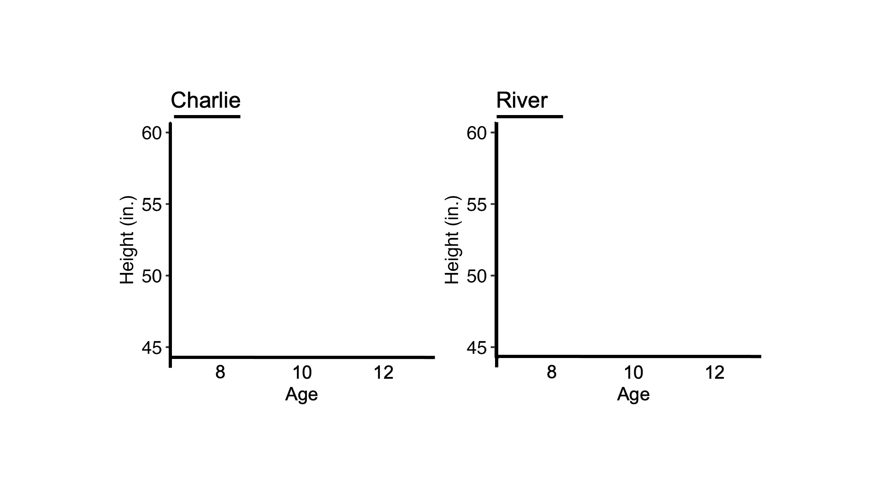
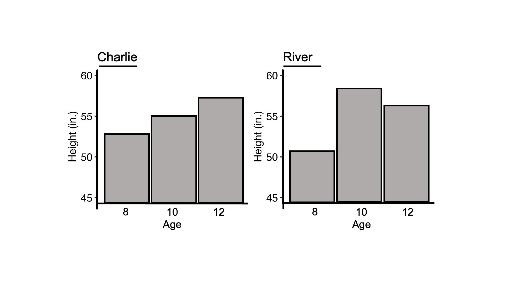

Describe the plot
Unfortunately, this study does not work in your current browser. Please use Chrome, Firefox, or Safari. Sorry!
In this experiment, we'll ask you questions about patterns of data in a graph. The graph will only stay on the screen for 15 seconds before disappearing, so pay close attention! After the graph disappears, we'll ask you to type a description of TWO interesting comparisons or patterns that you noticed in the data - so try your best to remember at least TWO!
Graph background: Imagine that you are looking at how two kids, Charlie and River, grow over time. Their heights are measured at ages 8, 10, and 12.
For now, only the axes are visible. When you are ready, you can reveal the data (for only 15 seconds) by pressing the right arrow key on your keyboard.
Graph disappearing in seconds.
 In the text box, please describe the patterns that you see as most interesting within the graphed data (10 words minimum)
NextDid you notice anything that didn't make sense in the plot? (If not, simply write "no" in the box below; if yes, please describe)
Did you previously notice that River's height gets lower between ages 10 and 12 (i.e., River shrinks during those years), which seems unlikely?
Please answer honestly! This may (or may not) be a trick question, so it is very important to us that you answer it based on what you really saw.
Did you previously notice that Charlie's height stays the same between ages 10 and 12 (i.e., Charlie does not grow during those years), which seems unlikely?
Please answer honestly! This may (or may not) be a trick question, so it is very important to us that you answer it based on what you really saw.
The purpose of this experiment was to see whether people tend to miss impossible patterns in graphs, depending on how the graphs are designed.
Please enter at least 10 words of comments/advice for us in the box below by answering some or all of the following questions.
Were the instructions clear? Were there any technical issues? Did you have any idea of what we were trying to do? Any other comments are welcome!
Once you write 10 words, a submit button will appear and you can complete the experiment!
Your browser should automatically redirect you to Prolific's webpage where you will be given a completion code.
Redirecting in seconds.
If you're not automatically redirected in a few seconds, please copy and paste this address on your web browser: